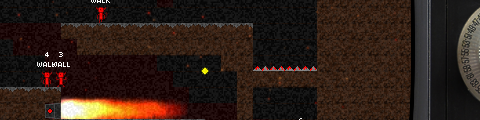
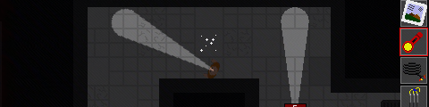
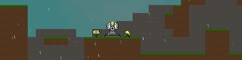
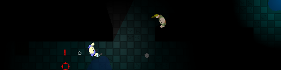

A complete directory of my game design works. The projects listed on this page are made in varying engines and languages of choice. Unless otherwise specified, all downloads are meant for Windows platforms only.
The Game Maker Community (GMC) Jam is a quarterly 72-hour development competition specifically for GameMaker users. Each event presents the user with a theme to base the game around, and a handicap to pose an interesting question or handicap that developers must account for.
These are my entries for all the GMC Jam competitions I have successfully completed an entry for.

Trials of Hell
Trials of Hell
Edward Brown's latest and greatest TV show, Trials of Hell, is under attack by network executives - and it's up to you to save the show by assigning new directives to your actors mid-broadcast.
Download (v1.5) | Download (v1.4)
GMC Jam #11
2nd (Tie) / 81
Event link

A Crafty Escape
A Crafty Escape
Island prisons are notorious for their apparent inescapability. When the power goes out, however, it's anyone's game. Darkness and hackjob engineering skills may help you avoid execution on death row.
Download (v1.0)
GMC Jam #15
19th / 56
Best Presentation (Tie)
Event link

Soul Synch
Soul Synch
The Academy warned you about cursed artifacts - especially ones that tear your soul asunder, cursing you to a painful, immortal existence. Traverse the afterlife(s) as you recover your fragmented humanity.
Download (v1.0) (warning: poorly functioning build)
GMC Jam #17
21st / 56
Event link

Echolotrate
Echolotrate
Global tensions run high in the midst of the Cold War, and you're not waiting for the Soviets to make the first strike. So what if you're blind - you will destroy a key Soviet compound and turn the tide of war.
Download (v1.2)
GMC Jam #18
5th / 55
Event link